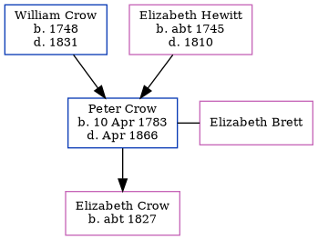

Peter Crow 1783 - 1866
[ Home ] | [ Calendar ] | [ Surnames Index ] | [ Errors ] | [ Family History ]The 2nd of 3 children of William Crow and Elizabeth Hewitt, Peter Crow, the fifth times great-uncle of Nigel Horne, was born in Minster, Thanet, Kent, England on 10 Apr 17831, was baptised there at St Mary the Virgin Church on 4 May 1783 and also married Elizabeth Brett (with whom he had 1 child, Elizabeth Hewett) there at St Mary the Virgin Church on 13 Jul 18163 (St. MarysKFHS CD34).
He died in Apr 1866 in Kent, England1,2 (union workhouse) and was buried at St Mary the Virgin Church, Minster, Thanet, Kent on 9 Apr 18662.
Parents
- William was born in 1748
- Elizabeth was born c. 1745
Children
- Elizabeth Hewett was born c. 1827
Citations
- England & Wales, FreeBMD Death Index: 1837-1915 Online publication - Provo, UT, USA: The Generations Network, Inc., 2006.Original data - General Register Office. England and Wales Civil Registration Indexes. London, England: General Register Office. © Crown copyright. Published by permission of the Cont
- England, Select Deaths and Burials, 1538-1991 Ancestry.com Operations, Inc.
- England Marriages 1538-1973 - Findmypast
Media
England Marriages 1538-1973 - R_848214016
Kent marriages and banns - GBPRS/CANT/M/97162350/1
Family Tree
Map
Generated by ged2site. Last updated on Jul 3, 2024